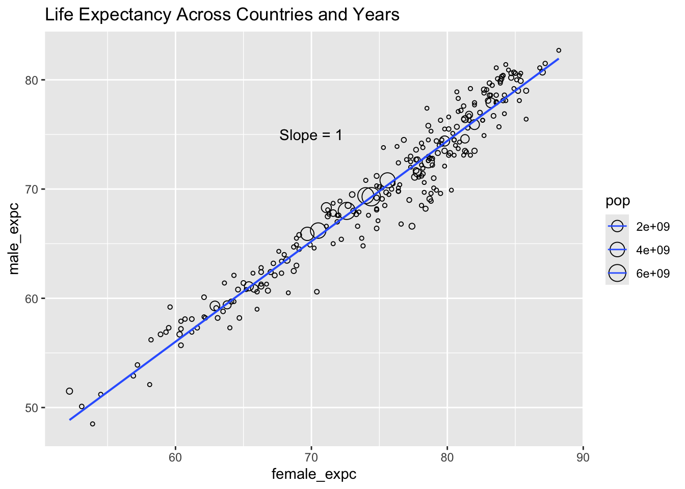

── Attaching core tidyverse packages ──────────────────────── tidyverse 2.0.0 ──
✔ dplyr 1.1.4 ✔ readr 2.1.5
✔ forcats 1.0.0 ✔ stringr 1.5.1
✔ ggplot2 3.5.1 ✔ tibble 3.2.1
✔ lubridate 1.9.3 ✔ tidyr 1.3.1
✔ purrr 1.0.2
── Conflicts ────────────────────────────────────────── tidyverse_conflicts() ──
✖ dplyr::filter() masks stats::filter()
✖ dplyr::lag() masks stats::lag()
ℹ Use the conflicted package (<http://conflicted.r-lib.org/>) to force all conflicts to become errors
library(mosaic)
Registered S3 method overwritten by 'mosaic':
method from
fortify.SpatialPolygonsDataFrame ggplot2
The 'mosaic' package masks several functions from core packages in order to add
additional features. The original behavior of these functions should not be affected by this.
Attaching package: 'mosaic'
The following object is masked from 'package:Matrix':
mean
The following objects are masked from 'package:dplyr':
count, do, tally
The following object is masked from 'package:purrr':
cross
The following object is masked from 'package:ggplot2':
stat
The following objects are masked from 'package:stats':
binom.test, cor, cor.test, cov, fivenum, IQR, median, prop.test,
quantile, sd, t.test, var
The following objects are masked from 'package:base':
max, mean, min, prod, range, sample, sum
library(skimr)
Attaching package: 'skimr'
The following object is masked from 'package:mosaic':
n_missing
library(ggformula)
age <-read_delim(file ="../../data/age-dataset.csv", delim =";")
Rows: 18408 Columns: 7
── Column specification ────────────────────────────────────────────────────────
Delimiter: ";"
chr (3): Entity, Code, Continent
dbl (2): Year, Population - Sex: all - Age: all - Variant: estimates
num (2): Life expectancy - Sex: female - Age: at birth - Variant: estimates,...
ℹ Use `spec()` to retrieve the full column specification for this data.
ℹ Specify the column types or set `show_col_types = FALSE` to quiet this message.
# A tibble: 303 × 7
ent code year female_expc male_expc pop cont
<chr> <chr> <dbl> <chr> <chr> <dbl> <chr>
1 Abkhazia OWID_ABK 2015 NA NA NA Asia
2 Afghanistan AFG 2015 64.6 60.8 33753500 Asia
3 Africa (UN) <NA> 2015 62.9 59.3 1201108000 <NA>
4 Akrotiri and Dhekelia OWID_AKD 2015 NA NA NA Asia
5 Aland Islands ALA 2015 NA NA NA Europe
6 Albania ALB 2015 81.2 76.4 2882482 Europe
7 Algeria DZA 2015 76.8 74.5 39543148 Africa
8 American Samoa ASM 2015 74.8 70.3 51391 Oceania
9 Andorra AND 2015 85.4 80.6 71766 Europe
10 Angola AGO 2015 63.1 58.2 28127724 Africa
# ℹ 293 more rows
# Converting variable type from cha to numericnew_year2015_age <- new_year2015_age %>%mutate(male_expc =as.numeric(as.character(male_expc)),female_expc =as.numeric(as.character(female_expc)) )
Warning: There were 2 warnings in `mutate()`.
The first warning was:
ℹ In argument: `male_expc = as.numeric(as.character(male_expc))`.
Caused by warning:
! NAs introduced by coercion
ℹ Run `dplyr::last_dplyr_warnings()` to see the 1 remaining warning.
new_year2015_age %>%gf_point(male_expc ~ female_expc, size =~pop, shape =1) %>%gf_refine(annotate("text", x =70, y =75, label ="Slope = 1")) %>%gf_lm(title ="Life Expectancy Across Countries and Years")
Warning: Removed 48 rows containing non-finite outside the scale range
(`stat_lm()`).
Warning: The following aesthetics were dropped during statistical transformation: size.
ℹ This can happen when ggplot fails to infer the correct grouping structure in
the data.
ℹ Did you forget to specify a `group` aesthetic or to convert a numerical
variable into a factor?
Warning: Removed 49 rows containing missing values or values outside the scale range
(`geom_point()`).
Warning: Using the `size` aesthetic with geom_line was deprecated in ggplot2 3.4.0.
ℹ Please use the `linewidth` aesthetic instead.

Target Variable: price and Predictor variables: width
Define the Research Experiment that might have been conducted to obtain that data
Define the Question or Questions that the Graph seeks to answer
Replicate the graph in code
Add you inference, and tell your story
What is the kind of plot used in the chart?
What variables have been used in the chart?
What can you say about the scale on X-axis?
What can you say about prices of items that are available in =single colour versus those that are available in more than one colour?
What is a good hypothesis to interpret the double-humped nature of some of the curves?